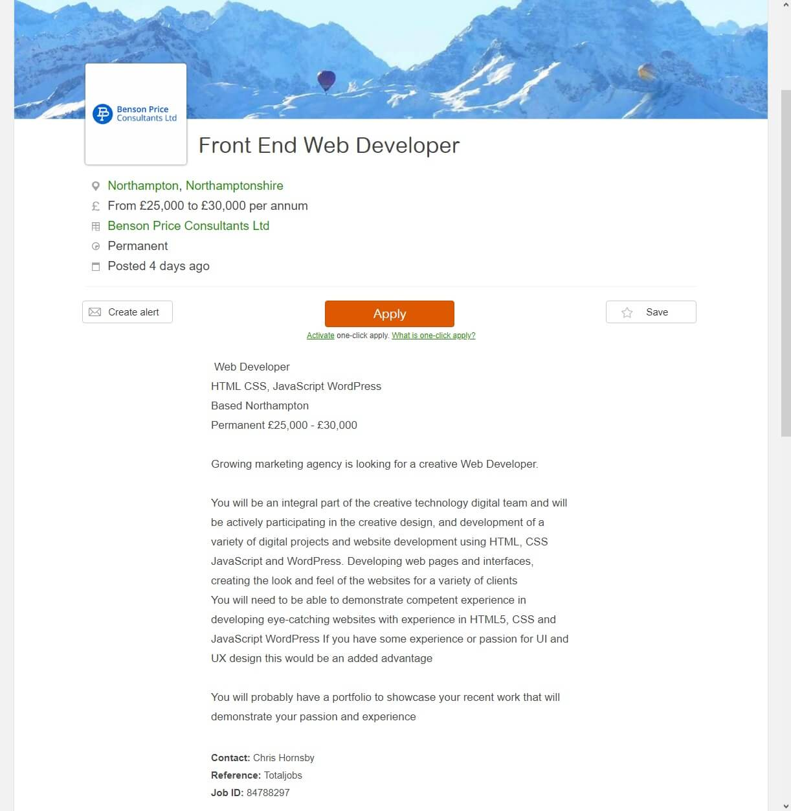
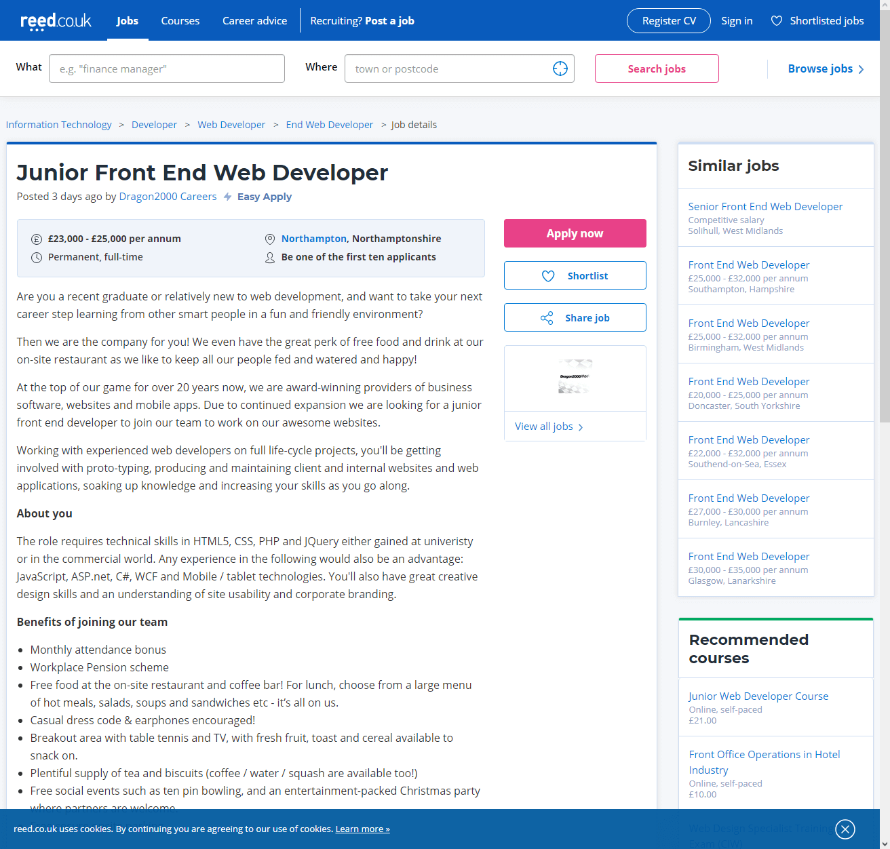

Company: Benson Price Consultants Ltd
Listed on: Totaljobs
Salary: £25,000 - £30,000
Requirements for position: HTML, CSS, JavaScript, and WordPress knowledge
Optional: Knowledge/passion in UI and UX design
I am quite surprised at how much just a front-end developer can earn. Some jobs that require keeping patients alive in hospitals pay less than this! The job suggests that you should have a portfolio, but I imagine without one it would be very difficult to get that position as they won't hire you if they don't know what you can do.
The listing does not have much detail - it does not tell me how many hours I'd be doing per day or anything like that. I would imagine, as it's a full time position from what I can gather, that you would be doing the standard 38 hours per week or something like that.
The listing also does not tell you any benefits of joining the team. It just goes out there to say "You'll earn this much making websites" and that's pretty much it.
The job involves you making websites for other people, where you would be developing the web pages and interfaces. They would also like some experience in UI and UX design, as obviously you would then know how to make eye-catching web pages if you know how to design the front properly.
Screenshot of website: (Click to enlarge)
Company: Dragon2000 Careers
Listed on: Reed
Salary: Starting between £23,000 - £25,000
Requirements for position: HTML5, CSS, PHP, JQuery (earned through university or in the commercial world).
Optional: Knowledge in JavaScript, ASP.net, C#, WCF, and Mobile/tablet tech.
Against Job 1, this role seems a lot more involved. You need to know some more technologies such as PHP and JQuery, which talk to back-end systems and process data.
Again, the salary is surprising to me. 23K to 25K for a junior position is incredible. For someone just starting a job from finishing university this is an amazing prospect, and that's just the starting point. Who knows where it would go from there.
The website in this case does list the benefits of joining the team, including some rather eye catching bonuses such as free food, casual dress, breakout area and social events. It seems like a very nice, casual place.
As I mentioned previously, this job is a lot more involved than the first job that I reviewed to the left. They want you getting involved with prototyping websites, maintaining client and internal business websites and web apps, while working with experienced web developers on full life-cycle projects. In other words, you'll be working with senior techs that can give you a helping hand when you need it, which is useful and nice.
This listing seems a lot more professional than the Benson one. It gets into the nitty gritty and actually tells you exactly what you'll be doing. They tell you your hours and days (M-F 9am-5pm), and what kind of role it is.
Screenshot of website: (Click to enlarge)
{kind=link}
{kind=link}